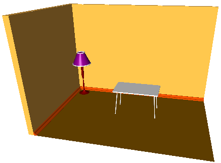

Room.
Let's create in sequence, object by object, such a scene as a room - two walls, a floor, a plinth, a standard lamp and a table.
To start with let's create the walls and the floor.
Let's define a parameterization and set up the parameters of the length (m_room_X_size), the width (m_room_Y_size) and the height (m_room_Z_size) of the room.
Let's create three similar contours consisting of two line segments along the length and the width of the room. We shall use the first contour to create the base contour of the walls, the second one to create the floor and the third one as the plinth profile.
This code creates the contour and duplicates it:
sgCObject* objects_buffer[10];
objects_buffer[0] = sgCreateLine(0.0, 0.0, 0.0, m_room_X_size, 0.0, 0.0);
objects_buffer[1] = sgCreateLine(0.0, 0.0, 0.0, 0.0, -m_room_Y_size, 0.0);
sgCContour* cnt1 = sgCContour::CreateContour(objects_buffer,2);
sgCContour* cnt2 = (sgCContour*)cnt1->Clone();
sgCContour* cnt3 = (sgCContour*)cnt1->Clone();
Further let's create the walls with the help of extrusion. For this, let's create the walls contour as a start:
objects_buffer[0] = cnt1;
objects_buffer[1] = sgCreateLine(0.0, -m_room_Y_size, 0.0,
-m_wall_thickness, -m_room_Y_size, 0.0);
objects_buffer[2] = sgCreateLine(-m_wall_thickness, -m_room_Y_size, 0.0,
-m_wall_thickness, m_wall_thickness, 0.0);
objects_buffer[3] = sgCreateLine(-m_wall_thickness, m_wall_thickness, 0.0,
m_room_X_size, m_wall_thickness, 0.0);
objects_buffer[4] = sgCreateLine(m_room_X_size, m_wall_thickness, 0.0,
m_room_X_size, 0.0, 0.0);
objects_buffer[5] = sgCContour::CreateContour(objects_buffer,5);
Now let's extrude this contour to the m_room_Z_size height and then remove this contour as an unnecessary one:
SG_VECTOR extVec = {0.0, 0.0, m_room_Z_size};
m_walls = sgKinematic::Extrude((const sgC2DObject&)(*objects_buffer[5]),NULL,0,extVec,true);
sgGetScene()->AttachObject(m_walls);
m_walls->SetAttribute(SG_OA_COLOR,20);
m_walls->SetAttribute(SG_OA_LINE_THICKNESS, 1);
sgDeleteObject(objects_buffer[5]);
Let's create the floor using the operation of constructing a flat face:
objects_buffer[0] = cnt2;
objects_buffer[1] = sgCreateLine(m_room_X_size, 0.0 , 0.0,
m_room_X_size, -m_room_Y_size, 0.0);
objects_buffer[2] = sgCreateLine(m_room_X_size, -m_room_Y_size, 0.0,
0.0 , -m_room_Y_size, 0.0);
objects_buffer[3] = sgCContour::CreateContour(objects_buffer,3);
m_floor = sgSurfaces::Face((const sgC2DObject&)(*objects_buffer[3]),NULL,0);
sgGetScene()->AttachObject(m_floor);
m_floor->SetAttribute(SG_OA_COLOR,25);
m_floor->SetAttribute(SG_OA_LINE_THICKNESS, 1);
sgDeleteObject(objects_buffer[3]);
Then we'll create the plinth. First we'll construct the plinth clip - a flat contour consisting of two line segments and three arcs. The following code creates this contour:
objects_buffer[0] = sgCreateLine(0.0, 0.0, 0.0, 0.0, -0.3, 0.0);
SG_ARC arcGeo;
SG_POINT p1,p2,p3;
p1.x = 0.0; p1.y = -0.3; p1.z = 0.0;
p2.x = -0.104; p2.y = -0.193; p2.z = 0.0;
p3.x = -0.099; p3.y = -0.232; p3.z = 0.0;
arcGeo.FromTreePoints(p1, p2, p3,false);
objects_buffer[1] = sgCreateArc(arcGeo);
p1.x = -0.104; p1.y = -0.193; p1.z = 0.0;
p2.x = -0.205; p2.y = -0.095; p2.z = 0.0;
p3.x = -0.132; p3.y = -0.128; p3.z = 0.0;
arcGeo.FromTreePoints(p1, p2, p3,false);
objects_buffer[2] = sgCreateArc(arcGeo);
p1.x = -0.205; p1.y = -0.095; p1.z = 0.0;
p2.x = -0.300; p2.y = 0.000; p2.z = 0.0;
p3.x = -0.294; p3.y = -0.047; p3.z = 0.0;
arcGeo.FromTreePoints(p1, p2, p3,false);
objects_buffer[3] = sgCreateArc(arcGeo);
objects_buffer[4] = sgCreateLine(-0.3, 0.0, 0.0, 0.0, 0.0, 0.0);
objects_buffer[5] = sgCContour::CreateContour(objects_buffer,5);
Now we create the plinth from this contour using the operation of constructing a pipe-like solid of an arbitrary clip:
SG_POINT pntOnPl = {0.0, 0.0, 0.0};
bool clPl = true;
m_down_plinth = sgKinematic::Pipe((const sgC2DObject&)(*objects_buffer[5]),NULL,0,
(const sgC2DObject&)(*cnt3),pntOnPl, 90.0, clPl);
SG_VECTOR transV = {0,0,0.01};
m_down_plinth->InitTempMatrix()->Translate(transV);
m_down_plinth->ApplyTempMatrix();
m_down_plinth->DestroyTempMatrix();
sgGetScene()->AttachObject(m_down_plinth);
m_down_plinth->SetAttribute(SG_OA_COLOR,35);
m_down_plinth->SetAttribute(SG_OA_LINE_THICKNESS, 1);
sgDeleteObject(objects_buffer[5]);
sgDeleteObject(cnt3);
Then let's create in sequence the stem of the standard lamp and its upper part.
The stem will be created using the operation of rotating a spline around the axis:
SG_SPLINE* spl = SG_SPLINE::Create();
p1.x = 0.1; p1.y = 0.0; p1.z = 4.0;
spl->AddKnot(p1,0);
p1.x = 0.2; p1.y = 0.0; p1.z = 2.0;
spl->AddKnot(p1,1);
p1.x = 0.03; p1.y = 0.0; p1.z = 1.8;
spl->AddKnot(p1,2);
p1.x = 0.1; p1.y = 0.0; p1.z = 1.0;
spl->AddKnot(p1,3);
p1.x = 0.05; p1.y = 0.0; p1.z = 0.1;
spl->AddKnot(p1,4);
p1.x = 0.6; p1.y = 0.0; p1.z = 0.01;
spl->AddKnot(p1,5);
objects_buffer[0] = sgCreateSpline(*spl);
SG_SPLINE::Delete(spl);
p1.x = p1.y = p1.z = 0.0;
p2.x = p2.y = 0.0; p2.z = 10.0;
m_stem = sgKinematic::Rotation(*(sgC2DObject*)objects_buffer[0],p1,p2,360,false);
SG_VECTOR transV1 = {1.0, -1.0 ,0.0};
m_stem->InitTempMatrix()->Translate(transV1);
m_stem->ApplyTempMatrix();
m_stem->DestroyTempMatrix();
sgDeleteObject(objects_buffer[0]);
sgGetScene()->AttachObject(m_stem);
m_stem->SetAttribute(SG_OA_COLOR,4);
m_stem->SetAttribute(SG_OA_LINE_THICKNESS, 1);
And the upper part will consist of three parts - the solid of a line segment revolution and two toruses:
objects_buffer[0] = sgCreateLine(1.0, 0.0, 3.7, 0.4, 0.0, 5.0);;
m_lamp_head = sgKinematic::Rotation(*(sgC2DObject*)objects_buffer[0],p1,p2,360,false);
m_lamp_head->InitTempMatrix()->Translate(transV1);
m_lamp_head->ApplyTempMatrix();
m_lamp_head->DestroyTempMatrix();
sgGetScene()->AttachObject(m_lamp_head);
m_lamp_head->SetAttribute(SG_OA_COLOR,5);
m_lamp_head->SetAttribute(SG_OA_LINE_THICKNESS, 1);
sgDeleteObject(objects_buffer[0]);
objects_buffer[0] = sgCreateTorus(1.0, 0.05, 24,24);
transV1.z = 3.7;
objects_buffer[0]->InitTempMatrix()->Translate(transV1);
objects_buffer[0]->ApplyTempMatrix();
objects_buffer[0]->DestroyTempMatrix();
sgGetScene()->AttachObject(objects_buffer[0]);
objects_buffer[0]->SetAttribute(SG_OA_COLOR,15);
objects_buffer[0]->SetAttribute(SG_OA_LINE_THICKNESS, 1);
objects_buffer[0] = sgCreateTorus(0.4, 0.05, 24,24);
transV1.z = 5.0;
objects_buffer[0]->InitTempMatrix()->Translate(transV1);
objects_buffer[0]->ApplyTempMatrix();
objects_buffer[0]->DestroyTempMatrix();
sgGetScene()->AttachObject(objects_buffer[0]);
objects_buffer[0]->SetAttribute(SG_OA_COLOR,15);
objects_buffer[0]->SetAttribute(SG_OA_LINE_THICKNESS, 1);
After that let's create the legs of the table using extrusion and move them to the required distance:
SG_CIRCLE tableLeg;
tableLeg.center.x = 0.0;tableLeg.center.y = 0.0;tableLeg.center.z = 0.0;
tableLeg.normal.x = 0.0;tableLeg.normal.y = 0.0;tableLeg.normal.z = 1.0;
tableLeg.radius = 0.04;
objects_buffer[0] = sgCreateCircle(tableLeg);
extVec.x = 0.2;extVec.y = 0.2;extVec.z = 2.5;
m_table_legs[0] = sgKinematic::Extrude((const sgC2DObject&)(*objects_buffer[0]),NULL,0,extVec,true);
extVec.x = -0.2;extVec.y = 0.2;extVec.z = 2.5;
m_table_legs[1] = sgKinematic::Extrude((const sgC2DObject&)(*objects_buffer[0]),NULL,0,extVec,true);
extVec.x = -0.2;extVec.y = -0.2;extVec.z = 2.5;
m_table_legs[2] = sgKinematic::Extrude((const sgC2DObject&)(*objects_buffer[0]),NULL,0,extVec,true);
extVec.x = 0.2;extVec.y = -0.2;extVec.z = 2.5;
m_table_legs[3] = sgKinematic::Extrude((const sgC2DObject&)(*objects_buffer[0]),NULL,0,extVec,true);
sgDeleteObject(objects_buffer[0]);
for (i=0;i<4;i++)
{
transV1.z = 0.0;
switch(i)
{
case 0:
transV1.x = -2.0;
transV1.y = -1.0;
break;
case 1:
transV1.x = 2.0;
transV1.y = -1.0;
break;
case 2:
transV1.x = 2.0;
transV1.y = 1.0;
break;
case 3:
transV1.x = -2.0;
transV1.y = 1.0;
break;
}
m_table_legs[i]->InitTempMatrix()->Translate(transV1);
m_table_legs[i]->ApplyTempMatrix();
m_table_legs[i]->DestroyTempMatrix();
objects_buffer[i] = m_table_legs[i];
}
To create the upper part of the table we'll construct an ordinary box:
objects_buffer[4] = sgCreateBox(4.4,2.4,0.1);
transV1.x = -2.2;
transV1.y = -1.2;
transV1.z = 2.5;
objects_buffer[4]->InitTempMatrix()->Translate(transV1);
objects_buffer[4]->ApplyTempMatrix();
objects_buffer[4]->DestroyTempMatrix();
Finally, let's group the parts of the table and locate it in the room:
m_table = sgCGroup::CreateGroup(objects_buffer,5);
transV1.x = 8.0;
transV1.y = -4.0;
transV1.z = 0.01;
m_table->InitTempMatrix()->Translate(transV1);
m_table->ApplyTempMatrix();
m_table->DestroyTempMatrix();
sgGetScene()->AttachObject(m_table);
m_table->SetAttribute(SG_OA_COLOR,15);
m_table->SetAttribute(SG_OA_LINE_THICKNESS, 1);
See also:
sgCContour sgCContour::CreateContour
sgGetScene sgCScene::AttachObject sgCObject::SetAttribute
Result:
